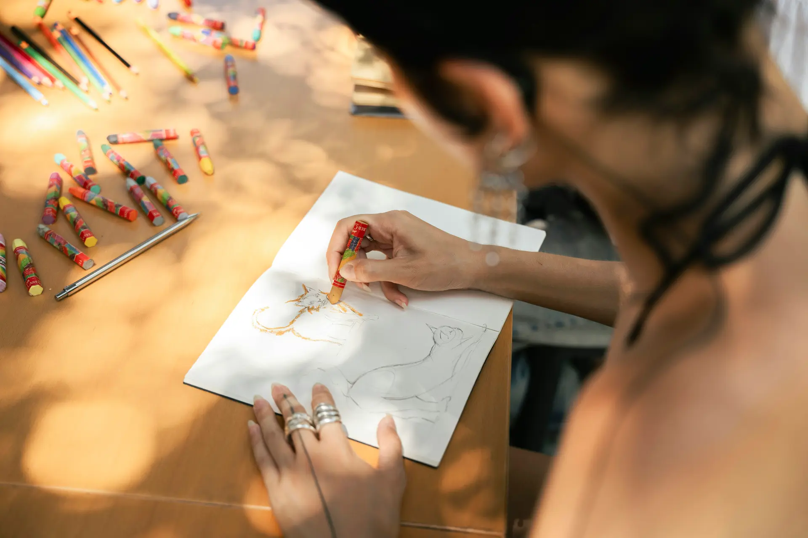

Per asili nido, scuole dell'infanzia e primarie
Dal primo open day all'ultima retta di giugno.
Iscrizioni, famiglie, rette e presenze in un posto solo. La segreteria smette di inseguire fogli Excel e chat di WhatsApp.
Marta Rinaldi chiede un posto per Leo, 14 mesi, nella sezione Semidivezzi.
Pensato per chi lavora con bambini da 0 a 10 anni
- Asili nido
- Micronidi
- Sezioni Primavera
- Scuole dell'infanzia
- Scuole primarie
- Poli 0-6
Quattro moduli, una sola scheda per ogni bambino.
Iscrizione, messaggi, pagamenti e presenze si agganciano alla stessa anagrafica. Il codice fiscale lo scrivi una volta, e da lì lo ritrovi ovunque.
Ogni richiesta di iscrizione ha un posto dove stare.
Le famiglie scrivono dal modulo sul tuo sito e finiscono in una bacheca: primo contatto, visita, pre-iscrizione, iscritto. Vedi subito chi aspetta una risposta e quanti posti restano in ogni sezione.
- Modulo di contatto da incollare sul sito della scuola
- Prenotazione degli open day con promemoria il giorno prima
- Graduatoria per sezione con i tuoi criteri: fratelli, residenza, ISEE
Primo contatto5
Fam. Rinaldi
Leo, 14 mesi
Aspetta risposta da 3 giorni
Fam. Esposito
Aurora, 9 mesi
Visita3
Fam. Conti
Matteo, 2 anni
Pre-iscrizione2
Fam. Greco
Alice, 18 mesi
Iscritti46
Fam. Bruno
Edoardo, 2 anni
Avvisi, autorizzazioni e diario, con la conferma di lettura.
Scrivi a una sezione intera o a un solo genitore e sai chi ha letto. Al nido le educatrici compilano il diario dal tablet: pasti, nanna, cambi e una foto.
- App per i genitori su iPhone e Android
- Autorizzazioni per uscite e gite firmate dal telefono
- Messaggi separati dal WhatsApp personale delle educatrici
Diario di Leo
martedì 13 ottobre · Coccinelle
- 08:12
Entrata · accompagnato da papà
- 11:45
Pranzo · pasta al pomodoro, tutto
- 12:40
Nanna · fino alle 14:15
- 15:30
Cambio
- 16:02
Foto
Uscita al parco, giovedì
Autorizzazioni firmate
18 / 22
Sollecita le 4 famiglie mancanti
Messaggio da Marta (mamma di Leo)
Domani lo prende la nonna Anna verso le 15, grazie!
Letto da Chiara, educatrice
Le rette si calcolano da sole, i solleciti partono con un clic.
Imposti le tariffe una volta, con riduzioni per fratelli e part-time. Ogni mese Girotondo prepara gli avvisi di pagamento, segna chi ha pagato e ti mostra chi manca.
- Addebito diretto SEPA o link di pagamento
- Ricevute pronte per il Bonus Nido INPS e per il 730
- Esportazione mensile per il commercialista
Rette di ottobre 2026
€ 20.960
incassati, € 3.040 ancora da incassare
| Bambino | Sezione | Importo | Stato |
|---|---|---|---|
| Leo Rinaldi | Semidivezzi | € 560,00 | Pagata |
| Sofia Ricci | Divezzi | € 520,00 | SEPA in corso |
| Tommaso Bruno | Divezzi | € 468,00-10% fratelli | Pagata |
| Giulia Marino | Semidivezzi | € 560,00 | Da sollecitare |
| Pietro Gallo | Part-time | € 390,00 | Pagata |
39 ricevute pronte per il Bonus Nido INPS · esportazione per il commercialista
Allergie, deleghe e presenze nella scheda di ogni bambino.
Chi ritira, cosa non può mangiare, quali consensi ha firmato la famiglia: lo trova chi ne ha bisogno, quando serve. Entrate e uscite si segnano con un tocco.
- Registro presenze giornaliero per sezione
- Deleghe al ritiro con foto della persona autorizzata
- Consensi privacy firmati e archiviati
Coccinelle · martedì 13 ottobre
18 presenti su 21
- LRLeo R.Allergia: arachidi08:12
- AEAurora E.Ritira: nonna Anna08:30
- GLGinevra L.Part-time08:0513:00
- EBEdoardo B.Dieta: senza lattosio09:10
- MCMatteo C.Assente: febbre
La cucina riceve alle 9:30 il conteggio dei pasti, con allergie e diete.
E poi ci sono le cose piccole, quelle che ti mangiano la mattina.
Più sedi, un solo account
Ogni sede ha le sue sezioni e i suoi permessi. La coordinatrice vede tutto, l'educatrice solo la sua classe.
Si parte dal tuo Excel
Carichi il file che usi oggi e Girotondo crea le schede. Se le colonne sono un po' creative, le sistemiamo noi.
Menu e diete
Ogni mattina la cucina sa quanti pasti preparare e chi ha un'allergia o una dieta speciale.
Calendario scolastico
Chiusure, ponti, colloqui e riunioni di sezione arrivano direttamente nel calendario dei genitori.
Documenti con scadenza
Certificati medici, vaccinazioni, autorizzazioni. Girotondo ti avvisa un mese prima che qualcosa scada.
Dati dei bambini al sicuro
Server in Unione Europea, accessi registrati e backup ogni notte. La scuola resta titolare dei dati.
Com'è andata oggi? Lo sanno già.
Alle quattro un genitore apre l'app e trova il diario della giornata: cosa ha mangiato, quanto ha dormito, la foto del disegno. Al cancello si parla d'altro.
Le educatrici lo compilano dal tablet della sezione in pochi tocchi, durante la giornata. Così la sera non resta un quaderno da ricopiare, e le foto non passano dal telefono personale.
Scopri il modulo FamiglieDa Excel a Girotondo in una settimana.
Nessuna installazione. La segreteria lavora dal browser, educatrici e genitori dall'app.
- 1
Mandaci i tuoi dati
L'Excel delle iscrizioni, l'elenco delle rette, quello che hai. Facciamo noi l'import e controlliamo che non manchi nessun bambino.
- 2
Invita il personale
Coordinatrice, segreteria ed educatrici entrano con il loro account. Ognuno vede le sezioni e i dati che gli servono.
- 3
Invita le famiglie
I genitori ricevono un SMS con il link all'app. Entrano con il numero di telefono, senza password da ricordare.
Il prossimo anno scolastico si prepara adesso.
Stiamo costruendo Girotondo insieme alle prime scuole. Lasciaci un contatto: ti scriviamo quando c'è qualcosa da provare, e quello che ci racconti decide cosa costruiamo per primo.
- Accesso anticipato per l'anno scolastico 2027/28
- Una chiamata di mezz'ora per capire come lavorate oggi
- Nessun impegno e nessuna carta di credito
Domande frequenti
Non trovi la tua? Scrivici, rispondiamo entro un giorno lavorativo.
Quando sarà disponibile Girotondo?
Le prime scuole pilota partono con l'anno scolastico 2027/28. Chi è in lista d'attesa riceve l'invito prima degli altri.
Quanto costa?
Stiamo definendo i prezzi con le scuole pilota. Dipenderanno dal numero di bambini iscritti, e chi è in lista d'attesa li conoscerà per primo.
Funziona anche per una scuola primaria?
Sì. I moduli sono gli stessi, cambiano i dettagli: alla primaria il diario giornaliero lascia spazio ad avvisi e autorizzazioni, e le rette diventano mensa, pre-scuola e uscite didattiche.
Dobbiamo installare qualcosa?
No. La segreteria usa Girotondo dal browser, educatrici e genitori dall'app per smartphone e tablet.
Come trattate i dati dei bambini?
Con la cura che meritano: server in Unione Europea, accesso solo a chi ne ha bisogno e un registro di ogni modifica. La scuola resta titolare dei dati e può esportarli quando vuole.
Usiamo già un altro gestionale. Possiamo passare a Girotondo?
Sì. Mandaci un'esportazione (va benissimo un Excel o un CSV) e l'import lo facciamo noi.